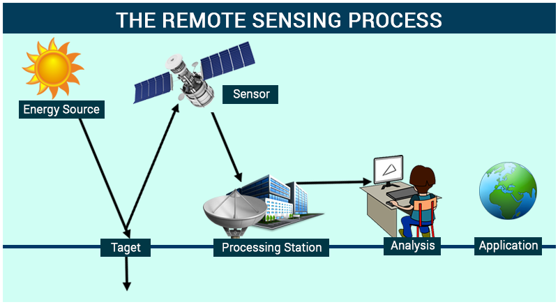
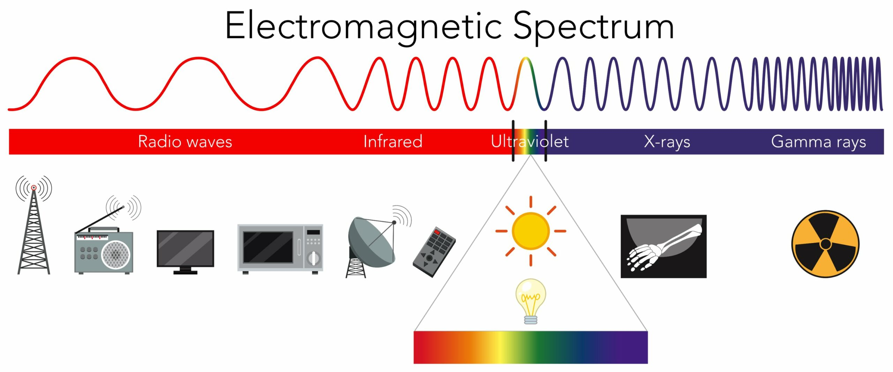
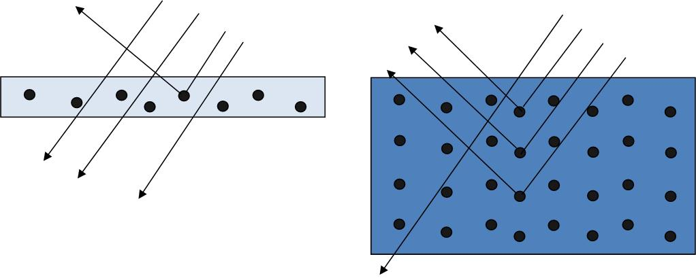

1 Hello Remote Sensing!
This is the first week of our exciting lesson on remote sensing. I will start with some basic and important concepts to tell what is remote sensing and how it works. I will try to explain the terms which might seem scaring as clearly as possible. Sounds interesting, doesn’t it?
1.1 What is remote sensing?
NASA defines remote sensing as acquiring information from a distance. Basically, this means there’s no physical interaction between the sensors and the object. It involves observing and collecting data about Earth’s surface.
Remote sensing allows us to see beyond what the human eye can detect. For instance, we can generate detailed topographic maps of the Earth’s surface although we haven’t been there. This capability enables us to easily distinguish between different land cover types such as urban areas, oceans, and vegetation, providing invaluable information for environmental monitoring, urban planning, agriculture, and various other applications.
1.2 How it works?
Remote sensing works by detecting and measuring the electromagnetic waves that is reflected by objects on Earth. This process involves several key steps:
Energy source: An energy source, usually the sun or sensors, provides electromagnetic radiation (1.2.2) that illuminates the Earth’s surface.
Radiation and the atmosphere: The Earth’s atmosphere interacts with the incoming radiation, absorbing or scattering (1.2.3) some wavelengths while allowing others to pass through.
Interaction with Earth’s surface (1.2.4): When the radiation reaches the Earth’s surface, different objects — such as water, forests, buildings, and fields — reflect, absorb, or transmit the radiation in various ways, depending on their material and structure.
Detection by sensors: Sensors on satellites or aircraft then detect and record the reflected radiation.
Analysis using SNAP and R
1.2.1 Sensors
Sensors can be mounted on any platform, such as satellites and aircraft mentioned above. They are designed to capture data in specific wavelengths or bands, which can reveal different features of the Earth’s surface.
There are two type of sensors:
Passive: Don’t emit anything and detect reflected energy from the sun which is in electromagnetic waves;
Active: Have an energy source which emits electromagnetic waves and then waits to receive
1.2.2 Electromagnetic waves
The electromagnetic spectrum is a broad classification that organizes electromagnetic waves according to their wavelengths and frequencies. It ranges from very short wavelengths, such as gamma rays and X-rays, to very long wavelengths, like radio waves. The visible spectrum, which can be detected by the human eye, is just a small part of the entire electromagnetic spectrum.

Emitted electromagnetic radiation with different wavelengths (bands) interacts with the surface materials and is then reflected back to the sensor. By analyzing the reflected signals, which vary across different materials due to their distinct reflectance properties, active sensors can identify and distinguish between various types of land cover. For example, vegetation absorbing most visible light for photosynthesis but reflecting much of the near-infrared light.
Electromagnetic waves are part of electromagnetic radiation. However, sometimes they can be seen as the same.
1.2.3 Scattering
Scattering, a process where particles deflect incoming light in various directions, affects how we perceive color in our environment.
1.2.3.1 Why is the sky blue?
There are three types of atmospheric scattering:
- Rayleigh = particles are very small compared to the wavelength
- Mie = particles are the same size compared to the wavelength
- Non selective = particles are much larger than the wavelength Sunlight is scattered by particles in the atmosphere
The sky appears blue due to Rayleigh scattering of shorter - blue - wavelengths by atmospheric particles. However, at sunrise or sunset there is much more atmosphere to pass through so more scattering occurs and red and orange light reach our eyes instead of blue.
1.2.3.2 Why is the ocean blue?
Similarly, the ocean’s blue color results from the water’s absorption of longer wavelengths and scattering of blue light. Shallow water can is clear as not many molecules scatter the light. And deeper ocean with more molecules scattering will appear blue.

Think: Why does the moon have a black sky?
1.2.4 Interacting with Earth’s surface
The Bidirectional Reflectance Distribution Function (BRDF) describes how light is reflected at different angles, affecting the appearance of Earth’s surface from space.
1.3 Resolution
- Spatial resolution: The size of one pixel on the ground.
- Spectral resolution: The number of spectral bands that a sensor can measure.
- We can take reflectance for each wavelength (or a band of several wavelengths) across the electromagnetic spectrum to create a spectral signature. Every feature on Earth will have a unique spectral signature.

- Temporal resolution: How often a sensor acquires data over the same location.
- Radiometric resolution: The sensitivity of a sensor to variations in signal strength due to different brightness levels that can be recorded by the sensor in each spectral band.
1.4 Something about the practical
1.4.1 Landsat and Sentinel
Landsat and Sentinel are both satellite programs used for Earth observation. Landsat, a joint program of NASA and the US Geological Survey, has been providing continuous global coverage since the 1970s. On the other hand, the Sentinel satellites are part of the European Union’s Copernicus program, designed for environmental monitoring with a more frequent revisit time.
If we need to compare the data from Landsat and Sentinel of a study area, the thing has to be aware of is the band of Landsat is wider than Sentinel.
1.5 Applications of spectral signatures
I explore the application of spectral signatures to roof materials.
The varied implementations of spectral signature technology — especially Spectral Angle Mapper (SAM) and traditional spectral signature analysis — demonstrate the flexibility and efficacy of this technology in tackling complex application scenarios.
In the context of post-disaster management,Bhaskaran et al. (2024) apply spectral signature technology, particularly the SAM method, showcasing its unique advantages in rapidly identifying the material composition of disaster-affected areas. Integrating with GIS data, the research identifies types of roofing materials and combines information such as population density and special risk areas, providing comprehensive decision support for disaster response.
However, the application of the SAM method also faces challenges, primarily the dependency on accurate and representative reference spectral libraries. Additionally, despite SAM’s insensitivity to variations in lighting conditions, field verification remains an indispensable step to ensure classification accuracy, which may increase the time and cost of the research.
On the other hand, Wyard et al. (2023) focus on urban roofing material classification. They apply traditional spectral signature analysis methods to hyperspectral data which demonstrate the capability of spectral signatures in detailed identification and classification of various materials in urban settings. This approach fully utilizes the complete information of the spectral data, including shapes and intensities, providing a flexible analytical framework.
However, this method is sensitive to lighting conditions and may require complex data preprocessing steps, such as atmospheric correction and normalization, adding to the complexity of the analysis.
The application of the SAM method in post-disaster management highlights the importance of spectral techniques in rapid disaster response and resource allocation. In contrast, traditional spectral signature methods in urban roofing material classification research exhibit their strengths in detailed material identification.
1.6 Reflection
The fundamental concept of acquiring information about Earth’s surface from a distance, without physical contact, opens up a world of possibilities for understanding our planet in ways that were unimaginable just a few decades ago.
The coverage on the electromagnetic spectrum and its significance in remote sensing particularly resonated with me. The explanation of how different wavelengths interact with Earth’s surface materials, allowing for the discrimination between various land covers, is a testament to the power of remote sensing in environmental monitoring, agriculture, and urban planning. This knowledge is not just academic; it has real-world applications that can lead to more informed decision-making and sustainable practices.
The advancements in sensor technology, data analysis tools, and the increasing accessibility of satellite data open up new avenues for exploration and innovation. While the current applications are vast, the potential for future developments is boundless. Whether it’s enhancing our understanding of climate change impacts, improving agricultural yields, or planning smarter cities, remote sensing stands at the forefront of technological advancement in our quest to understand and manage the Earth’s resources more effectively.
1.7 References
Bhaskaran, S., Datt, B., Forster, B., Neal, T. & Brown, M., 2004. Integrating imaging spectroscopy (445–2543 nm) and geographic information systems for post-disaster management: a case of hailstorm damage in Sydney. International Journal of Remote Sensing, 25(13), pp.2625-2639. doi: 10.1080/01431160310001642331.
Wyard, C., Marion, R. & Hallot, E., 2023. WaRM: A Roof Material Spectral Library for Wallonia, Belgium. Data. 8, 59. https:// doi.org/10.3390/data8030059.